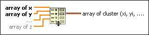

Index & Bundle Cluster Array Function
Owning Palette: Cluster, Class, & Variant VIs and Functions
Requires: Base Development System
Indexes a set of arrays and creates a cluster array in which the ith element contains the ith element of each input array.
The connector pane displays the default data types for this polymorphic function.

 Add to the block diagram Add to the block diagram |
 Find on the palette Find on the palette |